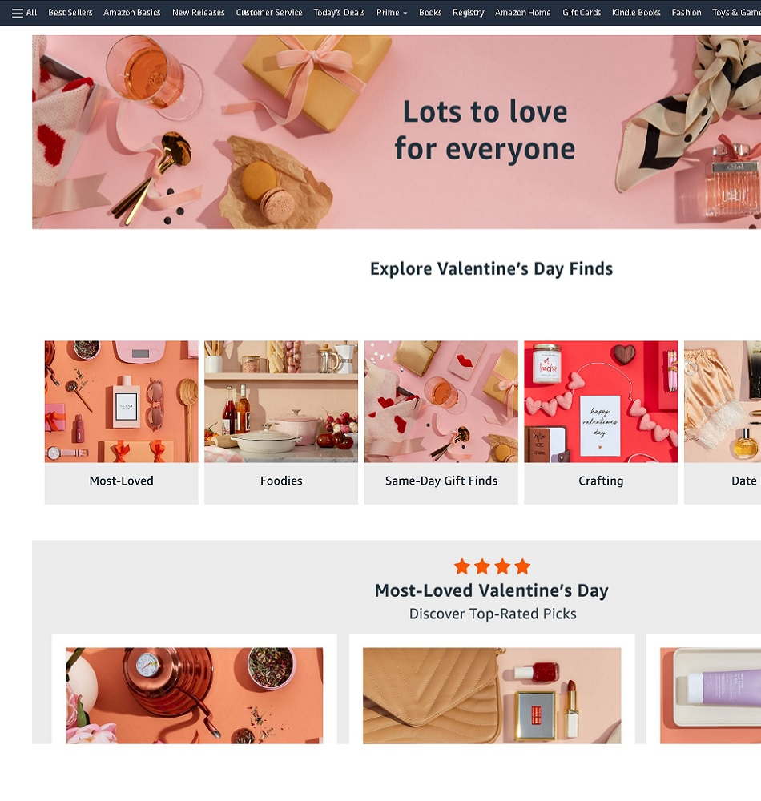
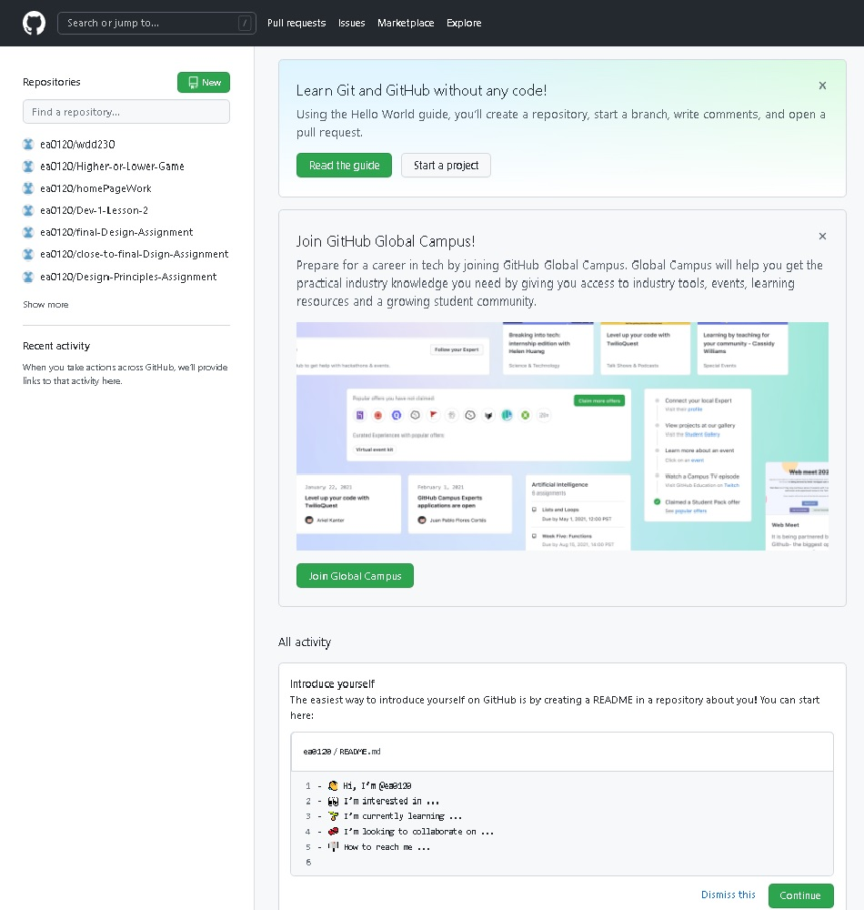

Google Store

REPETITION
The Google App Store is an example of Repetition. You can see this in the way it's formated. Each picture of a phone is exactly the same size.
Amazon
CONTRAST
Amazon is an example of Contrast. You can see this in the many colors are used on the site, plus the changing headline at the top.
GitHub
WHITE SPACE
GitHub is an example of WhiteSpace and Clear Design. You can easily see where the differt links are and where the user manual is located. It is also easy to find where the user home can be located.